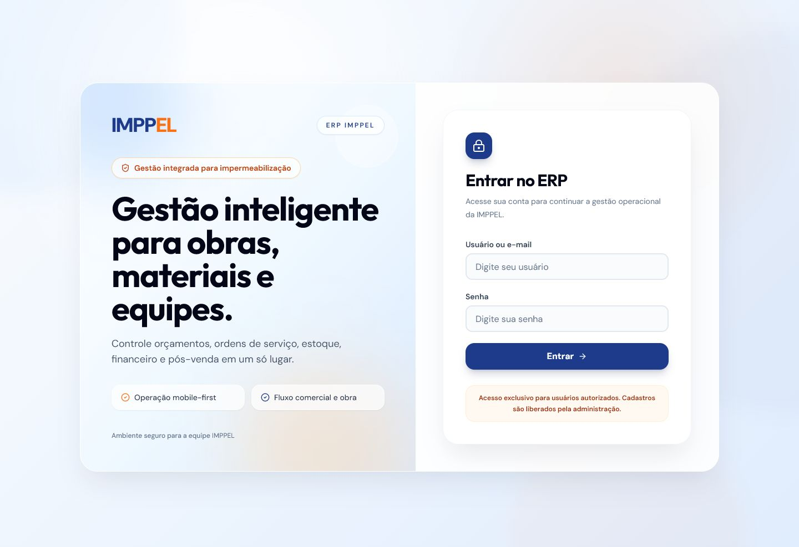

Challenge
Featured Project
ERP IMPPELReal System
A real system built for internal operations: CRM, budgets, work orders, materials, inventory, finance, after-sales, permissions and backup.

Solution
The ERP organizes the daily flow into connected modules with user roles, operational exports and technical backup.
Main Features
CRM, budgets, work orders, materials, inventory, finance and backup.
- CRM
- Budgets
- Work Orders
- Material Control
- Inventory
- Finance
- Warranties and after-sales
- Role permissions
- Backup and restoration
Manual records to centralized operation.
From disconnected controls to a structure for materials, inventory, work orders and reports.